In this assignment, we will generate a camera ray and shoot it toward a scene. Whenever it hits an object using intersection algorithms, it will determine the property of the material, and will make subsequent rays that bounces off the scene to create a realistic, nice rendered images.
Part 1: Ray Generation and Intersection
This first part of the assignment deals with the creation of multiple camera rays, and evaluating the radiance for each of those rays. This is the overview of the assignment, and by the end of this, we will be able to render simple colored scenes consisting of triangles and spheres such as these.
 Normal shading bench.
Normal shading bench.
|
|
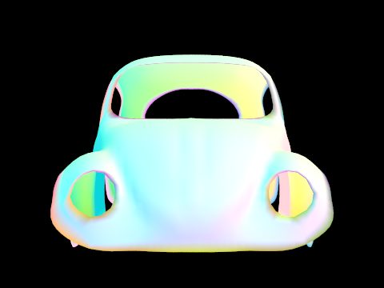
Normal shading beetle.
|
Task 1: Filling in the Sample Loop
|
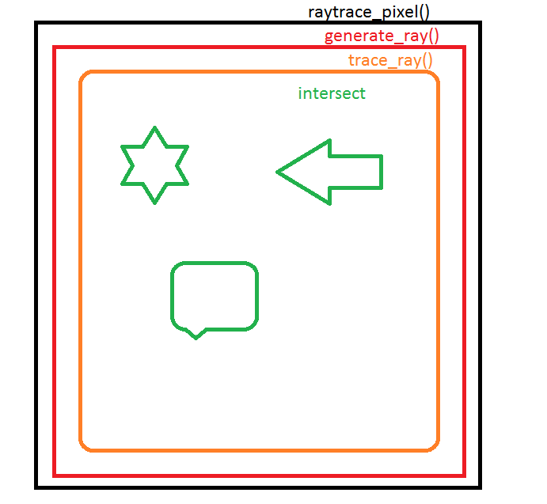
Overview of pathtracer.
|
The method raytrace_pixel is the beginning of this program. This method takes in a pixel coordinate (x, y), and calls generate_ray() to create multiple samples per pixel to raytrace around the scene. This sampling is done by using a sampler, that takes random numbers between 0 to 1, to generate some randomness to sampling within that pixel.
After receiving the spectrum, this method adds up the Spectrum from the multiple samples, then averages it by dividing by the number of samples. The Spectrum returned by this method is ultimately what gets displayed on screen.
Task 2: Generating Camera Rays
|
The camera ray points toward the negative Z direction
|
The camera rays are the beginning of the ray tracing program. Task 2 is about being given parameters x, y that represets the location of the view x-y plane that we want to begin our camera at. Given the lower and the upper coordinates of this plane:
Vector3D lower_left = Vector3D(-tan(radians(hFov)*.5), -tan(radians(vFov)*.5),-1);
Vector3D upper_right = Vector3D( tan(radians(hFov)*.5), tan(radians(vFov)*.5),-1);
We can determine the direction of the ray by linearly interpolating between the lower_left point and the upper_right point, by simply scaling the difference between these points, and adding it to the lower_left point. The z axis is -1, since we are going away from the screen. The origin of the ray is simply the position of the camera.
Task 3: Intersecting Triangles
|
This dragon is made of many small triangles, calculated using the Moller Trumbore Algorithm for ray to triangle intersection
|
Moller Trumbore Algorithm was used for calculating the intersection point for a ray-triangle intersection. Triangles can be represented in barycentric coordinates, which consists of three floats that add up to one, and can be thought of as weights that show how much of each vertex the point is closest to. This can be used to our advantage in figuring out intersections with a ray. The parametric equation for the ray is
Point = Origin + t*Distance
By setting the point in the ray equation to be the point in the triangle, we get a system of equation with three unknowns and three equations: t, u, and v. T is the time that the ray intersects the sphere, u, and v is the first two coordinates of the barycentric triangle point. The last point can simply be found by subtracting from 1.
With a combination of dot products and cross products of the original three vertexes, we can find these t, u, and v values. The t value needs to be checked so they are within the range for the Ray minimum and maximum value, while the u, and v value needs to be checked that they are between [0, 1] to ensure that the point is within the triangle.
Task 4: Intersecting Spheres
|
The Ray-Sphere Intersection allows spheres to render correctly.
|
Solving the ray-sphere equation involves a little bit more trickery, since the ray can potentially intersect at 0, 1, or two locations of the sphere. To solve this, we take the quadratic formula, and solve for the values in which t fits both equations.
First, we need to implement the test method, which takes in a Ray r. We will return three values, double t1, t2, and a boolean that determines if there was an intersection. t1 and t2 will signify the time in which the ray intersected the sphere. Given the quadratic formula
-b + sqrt(b^2 - 4ac) / 2a
-b - sqrt(b^2 - 4ac) / 2a
The solution to these two is the t value that the ray intersects with, where
a = dot(r.d, r.d)
b = dot(2*(r.o-o), r.d)
c = dot(r.o-o, r.o-o) - r2
We can quickly check if the ray intersects a spher eby checking if the determinant is not negative, which means that there is either one or two solutions.
After finding out the two t values, smaller one is the intersection point for the ray-sphere intersection code. One exception is when the t value is negative: that means that the ray intersected the sphere behind the origin. This needs to be caught by making sure to check that the t value is between the minimum and the maximum for the ray.
The normal of the sphere can be found by taking the hit_point and the origin of the circle, and taking its difference.
Part 2: Bounding Volume Hierarchy
Part 2 is all about optimization. By using a BVH, we can eliminate majority of intersection checks, resulting in being able to render much more bigger images such as these.
|
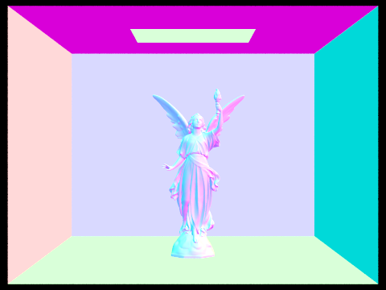
Lucy has hundreds of thousands of triangles
|
Task 1: Constructing the BVH
BVH, Bounding Volume Hierarchy, is an optimization data structure that is meant to reduce the number of objects to check for intersection. This highly benefits scenes with thousands of small triangles, because by dividing up that scene into different set of objects, we can eliminate many of the intersection tests that is unnecessary.
|
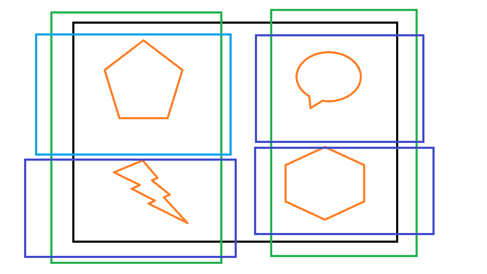
Simple BVH Example. Root node is the black rectangle, the shapes are categorized based on location.
|
The first step of constructing the BVH, is to make a Bounding Box for all the primitives in the scene. We iterate through the primitives, expanding the bounding box as we need, to obtain a big BVH Node that serves as the root of this structure.
Then, we check if this size of the node is bigger than the maximum size we set. In the case that it is less, then this can be a leaf node, and this node can be returned as is. However, when it has more primitives than this maximum, we need to sort the primitives into two bins, and create a node that has those primitives.
This can be done by taking the largest extent of the bounding box, and choosing the midway point as the sorting point. Although this has flaws, (One triangle very far from rest, others are very congregated in one area), it is an easy metric to try. We initialize a left and a right vector, and we sort all the primitives based on whether the centroid point is less or greater than the midway point of that extent.
This can sometimes lead to problems where one node is empty. This will lead to an infinite recursion. I prevent this by checking for whether this case occurs after the end of sorting, and I try the different extents to see if any of them yield a better result. After all of the three axis fail, I simply call that node a leaf node, and move on with the rest of the primitives.
Task 2: Intersecting BBox
Intersection code for a bounding box is unline intersection with a triangle or a sphere, since it is only used to check if there is a primitive that may intersect within this bounding box. Therefore, it does not update any ray max values that a primitive has.
The bounding box at first can seem like it is very difficult to check for intersections due to the number of faces it has. However, it turns into a simple problem of ray to plane intersection by decomposing the bounding box into the faces of the axis. In fact, it is even simpler than a ray-plane intersection because the plane is guaranteed to be parallel to its axis.
We first find out the minimum and the maximum intersection point for all three axis. Using these six values, we find the biggest minimum and the smallest maximum to make the bounding box as small as possible.
Task 3: Intersecting BVHAccel
Task 3 is where it combines task 1 and task 2 to make intersection much faster.
We first check if the ray intersects the bounding box of that node at all. If it does not, we know that none of the primitives intersect this ray, and we can simply return false. We can also return false if the t value of intersection is less than the minimum t of the ray, or greater than the maximum t value.
In the case that it does intersect, we check if this node is a leaf node. If it is, this means that we can do the typical intersection check by recursing through all of its primitives, and updating the intersect data structure as needed. This ensures that we hit the closest primitive we can.
If this is not the leaf node, then we can further divide up these primitives. Using the children we made from task 1, we call the intersection code recursively, and see if the child intersected. By doing this binary search style of finding its intersection, we can speed up the ray tracing by a significant amount.
Part 3: Direct Illumination
|
Dragon rendered with direct illumination.
|
The high level picture for direct illumination is that given a ray and its intersection object, we check all of the lights in the scene and check if the light can affect its color. We sample random light vectors from those light objects, and add up the total effect of all of these lights, and return it as the direct lighting from the light objects.
The ray origin and direction is in world coordinates, however, to make things easier, we compute these samples using object coordinate, where the Z direction is aligned with the normal. This means that the radiance needs to be converted into object coordinate for calculations.
This part was quite difficult in debugging. Here are some of the pictures I accumulated along the way, and their problems.
|
Light rendering when surface normal was not pointing toward the light, as opposed to pointing
|
I misunderstood the instructions in the project page, when z is negative, you "continue" the loop as in do not do steps 6 and 7. I only figured out that this was incorrect after thinking about what the math is saying intuitively.
Compare Different Number of Light Rays
|
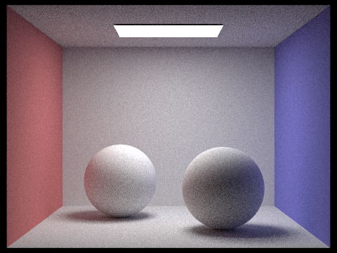
Only one area light ray. Image has more discrepancy of color, because the light is not sampled enough times.
|
|
10 area light rays, this looks better than the previous one.
|
|
This is with 20 light ray.s The image looks slightly smoother, but is reaching a point where it does not really affect the image..
|
Part 4: Indirect Illumination
|
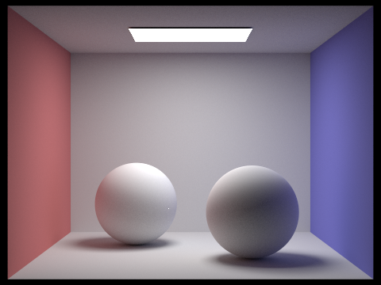
The colors of the walls bleed onto the balls
|
Indirect Illumination is very similar to direct, except that we are dealing with light that bounces off other objects.
The high level of this method, is that it asks for a sample from the bsdf, with only giving a w_out, the out going radiance. We get the irriadiance and the pdf, and we do a coin flip to decide whether to stop the recursion or to keep going. This is decided by how bright the bsdf Spectrum is.
After deciding not to terminate, we calculate the next ray that we use to calculate the next indirect lighting. Our origin is the hitpoint + some small distance away to prevent floating point errors, and the direction is the irradiance. We decrement the recursion depth so it stops at a reasonable time.
The result is then multiplied by the bsdf and scaled down by a cos, probability and the pdf.
|
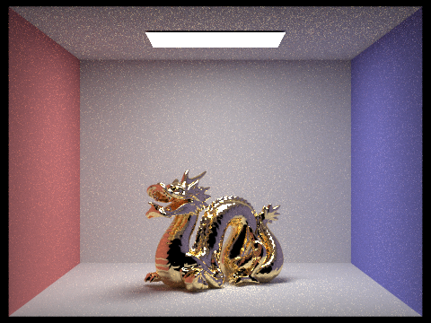
Direct and indirect illumination render realistic images
|
|
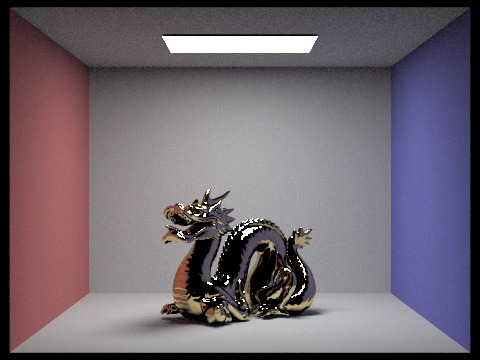
Only direct illumination
|
|
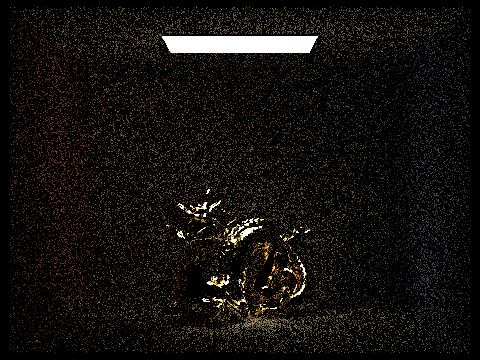
Only indirect illumination
|
 max_ray_depth of 1
max_ray_depth of 1
|
Sample per Pixel Example: Indirect Illumination
|
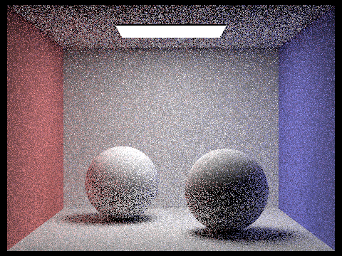
sample-to-pixel with 1
|
|
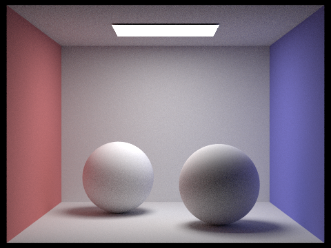
sample-per-pixel with 128
|
|
sample-per-pixel with 1024
|
Part 5: Materials
Part 5 allows BSDF that is not just Diffuse to allow for more complicated path tracing.
Task 1: Mirror Material
|
Left is reflection, Right is Reflection + Refraction (glass)
|
Task 3: Glass Material
We code the glass BSDF in the bsdf.cpp file. There are two methods to code for MirrorBSDF, f() which takes in an wo and a wi. This function can not be used since there is no way for this class to know about the Spectrum of the reflecting angles.
sample_f() method takes in an outward radiance, and gives back an w_i and a pdf that is used to scale the returning Spectrum. This method calls the reflect method, and gives back the reflectance scaled by the absolute cosine of the wi.
The reflect method takes in the wo, then calculates the reflect vector using this equation
*wi = -wo + 2 *dot(Vector3D(0, 0, 1), wo) * Vector3D(0, 0, 1);
Task 4: Mirror Material
This method is more complicated in that it uses a combination of reflection and refraction, where this ratio is determined by Schlick's approximation.
The method sample_f() first starts off with checking whether the ray is leaving towards the vacuum or entering glass. This changes the ior value of the material, where ni is the current ior value, and no is the out going ior value.
Then, we calculate the cos of the radiance, as well as the sin. We then check whether the angle will be a total internal reflection. This only happens when ni is larger than no, and when sin2 is larger than 1. In the case of a total reflection, we run the reflection code and return its value.
After we know that there will be no total reflection, we calculate the Schlick's value by calculating r0 and r. By calling the coin_flip method, we determine whether this ray will produce a reflection or a refraction.
When it is a reflection, it is the same as the mirror. However, when it is the refraction, it will be more complicated. It uses the Snell's law of refraction, then calculates the out going ray.
Comparison: Maximum Ray depths
|
maximum ray depth with 10
|
|
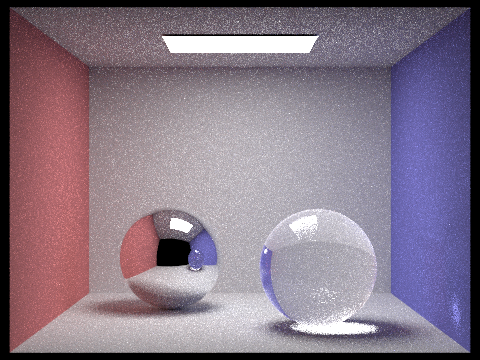
maximum ray depth with 25
|
|
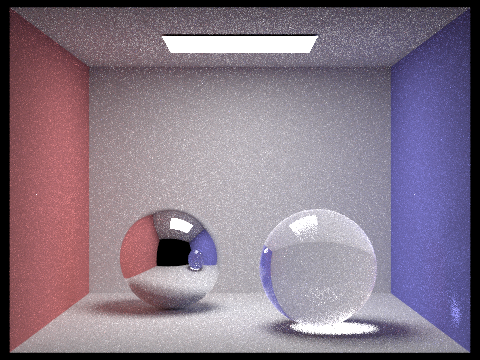
maximum ray depth with 50
|
|
maximum ray depth with 75
|
|
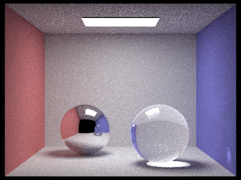
maximum ray depth with 100
|
Samples per Pixel Example
|
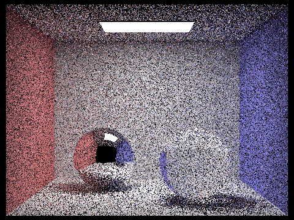
sample-per-pixel with 1
|
|
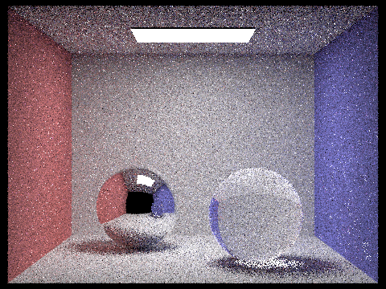
sample-per-pixel with 4
|
|
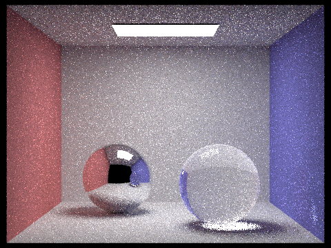
sample-per-pixel with 16
|
|
sample-per-pixel with 1024
|